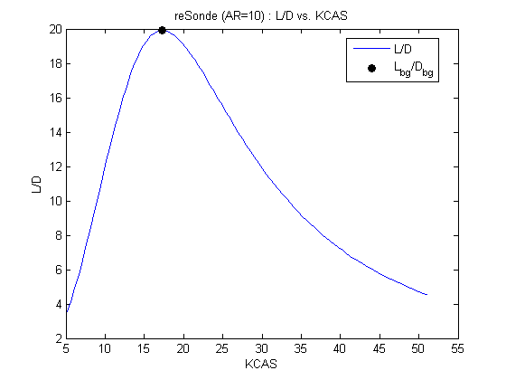
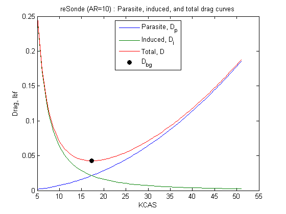

Preliminary Sizing for reSonde
Contents
Aircraft Parameters
clear, clc, close all configTitle='reSonde (AR=10)'; m_merlin_vehicle=getreSondeMass(); W = m_merlin_vehicle * 32.2; % weight, lbf % New Wing c = 4.5/12; %S/b; % wing mac, ft AR = 10; %b^2/S; % wing aspect ratio b= AR*c; S=b*c; % Old Wing % b = 31/12; % merlin span, ft % S = 175/12^2; % merlin wing reference area, ft^2; % c = S/b % wing mac % AR = b^2/S % wing aspect ratio C_D0 = 0.0150; % guess, flaps up parasite drag coefficient e = 1.78*(1-.045*AR^0.68)-0.64; % airplane efficiency factor, Raymer p347
Conditions
h = 10000; % altitude, ft mu = 1.81E-5; % kg/(m*s) viscosity of air at 15degC h_m = convlength(h,'ft','m'); phi = 0; % bank angle, deg
Calculate atmospheric parameters:
atmoscoesa is basically ICAO data plus data for >60,000ft
[T, a, P, rho] = atmoscoesa(h_m, 'Warning'); rho_imperial = convdensity(rho,'kg/m^3','slug/ft^3');
Best glide speed:
TAS_bg = sqrt((2*W) / (rho_imperial*S))... *(1./(4*C_D0.^2 + C_D0.*pi*e*AR*cos(phi)^2)).^(1/4); % TAS, fps KTAS_bg = convvel(TAS_bg,'ft/s','kts')'; KCAS_bg = correctairspeed(KTAS_bg,a,P,'TAS','CAS')'; V_bg = convvel(TAS_bg,'ft/s','m/s'); % TAS, m/s mach_bg = machnumber([V_bg,0,0],a); % mach number Re_bg = rho*V_bg*c/mu; % Reynolds # at best glide speed
Best glide slope:
LODmax=1/2*sqrt(pi*AR*e/C_D0) gamma_bg_rad = asin( -sqrt((4.*C_D0')./(pi*e*AR*cos(phi)^2 + 4.*C_D0')) ); gamma_bg = convang(gamma_bg_rad,'rad','deg') % best glide slope, deg % nmi range gliding from 40,000ft range_bg=40000/tand(-gamma_bg)/5280 % range, miles
LODmax = 19.9039 gamma_bg = -2.8762 range_bg = 150.7869
Best glide lift and drag:
D_bg = -W*sin(gamma_bg_rad); L_bg = W*cos(gamma_bg_rad); qbar = dpressure([TAS_bg' zeros(size(TAS_bg,2),2)], rho_imperial); C_D_bg = D_bg./(qbar*S) C_L_bg = L_bg./(qbar*S) % debugging ~~~~~ % speeds=5:5:30; % qbar_alt = dpressure([speeds', zeros(size(speeds,2),2)], rho_imperial) % C_D = D_bg./(qbar_alt*S) % C_L = L_bg./(qbar_alt*S) % figure(3),clf, plot(speeds,C_L)
C_D_bg =
0.0300
C_L_bg =
0.5971
Verification
Plots to make sure my calcs are right:
TAS = (10:100)'; % true airspeed, fps KTAS = convvel(TAS,'ft/s','kts')'; % true airspeed, kts KCAS = correctairspeed(KTAS,a,P,'TAS','CAS')'; % corrected airspeed, kts qbar = dpressure([TAS zeros(size(TAS,1),2)], rho_imperial); Dp = qbar*S.*C_D0; % parasite drag Di = (2*W^2)/(rho_imperial*S*pi*e*AR).*(TAS.^-2); % induced drag D = Dp + Di; alp_bg=C_L_bg/(2*pi)*180/pi; % from above, the angle of attack is about 7 degrees. Adding the flight path angle (i.e. best glide angle) from above shows the fuselage pitch (attitude angle theta) to be about 2 degrees. L = W;
Plot L/D versus KCAS
h1 = figure(1); clf plot(KCAS,L./D); title([configTitle,' : L/D vs. KCAS']); xlabel('KCAS'); ylabel('L/D'); hold on plot(KCAS_bg,L_bg/D_bg,'Marker','o','MarkerFaceColor','black',... 'MarkerEdgeColor','black','Color','white'); hold off legend('L/D','L_{bg}/D_{bg}','Location','Best'); % annotation('textarrow',[0.4225 0.4225],[0.23 0.12],'String','TAS_{bg}');
Plot parasite, induced, and total drag curves
h2 = figure(2); clf plot(KCAS,Dp,KCAS,Di,KCAS,D); title([configTitle,' : Parasite, induced, and total drag curves']); xlabel('KCAS'); ylabel('Drag, lbf'); hold on plot(KCAS_bg,D_bg,'Marker','o','MarkerFaceColor','black',... 'MarkerEdgeColor','black','Color','white'); hold off legend('Parasite, D_p','Induced, D_i','Total, D','D_{bg}','Location','Best'); % annotation('textarrow',[0.4225 0.4225],[0.23 0.12],'String','TAS_{bg}'); print(h1,'-dpdf',['Fig1 - L_D vs KCAS ',configTitle]) print(h2,'-dpdf',['Fig2 - Drag Buildup vs KCAS ',configTitle])